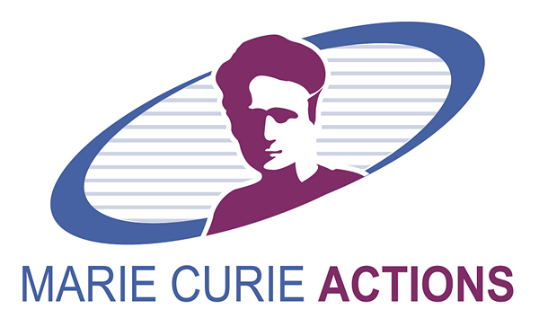
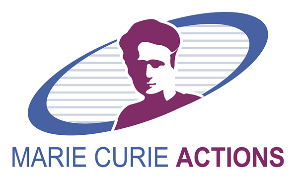

Project Highlight
"If we knew what we were doing, it wouldn't be called research." -- Albert Einstein
I have been leading several R&D projects (H2020, Marie Curie ITN, German DAAD, EIT, Tekes Finland) in tight collaboration with industrial companies such as Nokia, Broadcom, Ericsson, Deutsche Telekom, Telia, Elisa, NEC and F-Secure. My latest research focus is on edge AI solutions for cyber-physical systems as reflected in the CPI open topics.
I am managing awarded EU Horizon grants as Consortium Director and PI (€5M+). Projects listed below illustrate my track records and research schemes, with appreciation to strong supports from EU funding agents.
 
 

Current Projects
H2020: SPATIAL
- Funding:
 EU Horizon, €5M budget (scored 14,5/15)
EU Horizon, €5M budget (scored 14,5/15)
- Duration: 2021 - 2024
- Role: Coordinator & Scientific Director
- This H2020 project seeks to address the challenges of black-box AI and data management by covering data privacy, resilience engineering, and legal-ethical accountability that are in line with EU top agenda to achieve Trustworthy AI.
- Project Site
Marie Curie ITN: APROPOS
- Funding: EU Horizon, €4M budget (scored 98/100 out of 1509 proposals)
- Duration: 2020 - 2024
- Role: Principal Investigator
- This ITN project enables my group to investigate approximate edge intelligence for optimizing energy efficiency in large scale AI algorithmic processing for the vision of sustainable Edge AI.
- Project Site
Safe AI for Healthcare
- Funding: TBM AI (ranked Top 1)
- Duration: 2022 - 2024
- Role: Co-PI
- This project will bring together organizational learning, safety science and machine learning, with the vision to apply the future AI-coach tool as a health system intervention (using implementation science principles).
Airborne Safety
- Funding: Safety & Security Institute
- Duration: 2022 - 2023
- Role: Co-PI
- This project will advance the state-of-the-art in aviation safety by developing cyber-secure and data-protected decentralized solutions that can better support the deployment of Edge AI services for aircraft safety and maintenance. One major goal is to promote sustainability practices in aviation maintenance.
Infrarium
- Funding: TBM
- Duration: 2020 - 2022
- Role: Co-PI
- The Infrarium is a mobile cyber-physical reconfigurable experimental laboratory similar to an escape room, where players experience the urgency and emotional tension involved in managing the evolution of energy infrastructures during energy transition. We aim to bring awareness of the complexity and interdependencies of energy transition, to create the experience of urgency, to support decision making under stressful situations, and to investigate how novel IoT visible light ensures data communication and interaction between simulation and users, sensors, actuators and dials.
- Project Site
Do IoT Fieldlab
- Funding: European Regional Development Fund and MRDH
- Duration: 2019 - 2023
- Role: Edge Computing for IoT
- Partners: TNO, SURF, Delft, The Hague, Rotterdam
- Project Site
Completed Projects
iSafe: IoT Safety Living Lab
- Funding: Safety & Security Institute
- Duration: 2020 - 2021
- Role: Principal Investigator
- This project focuses on building iSafe, a living lab to jointly investigate IoT safety and security, especially the hardware-software vulnerabilities of IoT. Through iSafe, we will test numerous IoT hw-sw suits and security solutions, conduct data collection, measurements, data learning (ML based), and qualitative studies in live testbed to evaluate the effects.
SecureLight
- Funding: Safety & Security Institute
- Duration: 2020 - 2021
- Role: Co-PI
- This project will systematically analyze the visible light communication (VLC) security myths and facts, and exploit the natural characteristics of light to create insights, technology, and methodologies for securing VLC networks. Through SecureLight, we will carry out live and user-centric demonstration in the Infrarium container.
Trust IoT Edge Computing
- Funding: EU Horizon 2020 cascading personal grant (selection rate 21/65)
- Duration: 2018 - 2020
- Role: Principal Investigator
- Project Site
SSICLOPS
- Funding: EU Horizon 2020, €6,7M budget
- Duration: 2015 - 2018
- Role: work package on securing private cloud communications
- Partners: Cambridge, TUM, RWTH Aachen, T-Mobile, NEC, NetApp, F-Secure
- Project Site
Secure IoT Sensing in Smart Buildings
- Funding: Bavaria California Technology Center
- Duration: 2017 - 2018
- Role: Co-PI
- Partner: University of California Irvine
- Project Site
Edge Communication with Visible Light
- Funding: Global Incentive Fund, TU Munich
- Duration: 2017 - 2018
- Role: Co-PI
- Partner: Peking University
- Project Site
D2D Trust Ecosystem
- Funding: DAAD
- Duration: 2017 - 2018
- Role: Co-PI
- Partner: HKUST
- Project Site
SoftOffload
- Funding: EIT
- Duration: 2014 - 2017
- Role: Project Leader
- Partners: Cambridge, University of Helsinki, EIT
- Project Site
Internet of Things (IoT)
- Funding: Tekes Flagship Program €50M
- Duration: 2011 - 2016
- Role: work package on energy efficient communications
- Partners: Nokia, Ericsson, TeliaSonera, F-Secure
- Project Site
TAKE-5G
- Funding: Tekes 5thGear Program
- Duration: 2015 - 2016
- Role: work package on 5G large-scale testbed
- Partners: Nokia, Intel, Huawei, Ericsson, Elisa, Telia, F-Secure
- Project Site
Cyber Trust
- Funding: DIMECC
- Duration: 2015 - 2016
- Role: work package on SDN/NFV security
- Partners: Nokia, Ericsson, Elisa, F-Secure
- Project Site
Cloud Security Service (CloSe)
- Funding: Tekes
- Duration: 2014 - 2016
- Role: Project Manager at University of Helsinki
- Partners: Nokia, F-Secure, SSH
- Project Site
Virtual Network Element (VirNe)
- Funding: Nokia
- Duration: 2014 - 2015
- Role: work package on service chaining for mobile cloud
- Partner: Nokia
EIT SDN
- Funding: EIT
- Duration: 2013 - 2014
- Role: work package on WiFi offloading platform
- Partners: Deutsche Telekom, TU Berlin, TU Munich, INRIA
- Project Site
MADNet
- Funding: Deutsche Telekom
- Duration: 2011 - 2013
- Role: work package on mobile data offloading in metropolitan areas
- Partners: Deutsche Telekom, University of Maryland at College Park
- Project Site
FISHOK
- Funding: TiViT
- Duration: 2009 - 2012
- Role: work package on congestion control for future Internet
- Partners: Nokia, Nokia Networks, Ericsson, TeliaSonera, F-Secure
- Project Site
Wireless Broadband Access (WiBrA)
- Funding: Tekes
- Duration: 2010 - 2012
- Role: work package on advanced IP signaling for multi-interfaced mobile devices
- Partners: Nokia, Nokia Networks, TeliaSonera
- Project Site
WISEciti
- Funding: Tekes
- Duration: 2008 - 2010
- Role: work package on handover management and security in wireless IP access
- Partners: Nokia, Ericsson, TeliaSonera
- Project Site
NEON
- Funding: Nokia
- Duration: 2007
- Nokia sub-contract research engineer on virtualization-based migration for VoIP services
- Project Site

 and H2020 SPATIAL (€5M)
and H2020 SPATIAL (€5M)